Upload a scanned invoice, match your items, and update stock and costs.
Items from your supplier already have vendor item IDs from your initial onboarding, plus a primary unit. The first time you receive an item from a supplier, you relate what arrived back to that primary unit. After that, it's set.
The video uses sample data, not real invoices.
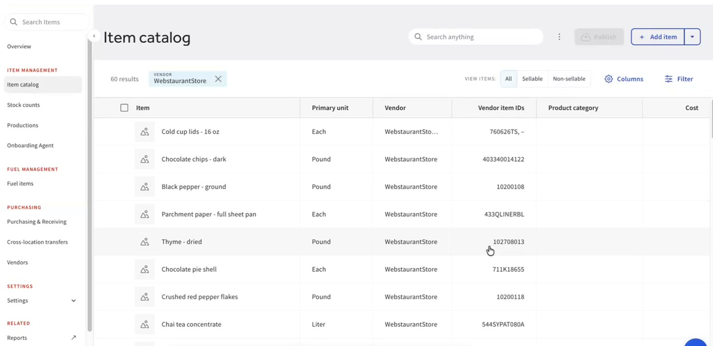
Go to Purchasing & Receiving and choose Upload invoice. Add a PDF or image of your invoice, then give it about two minutes to scan.
Prefer another route? Receive via invoice lets you enter an invoice by hand, and Create PO starts the purchase order process, where you create an order, send it to your sales rep, and receive against it.
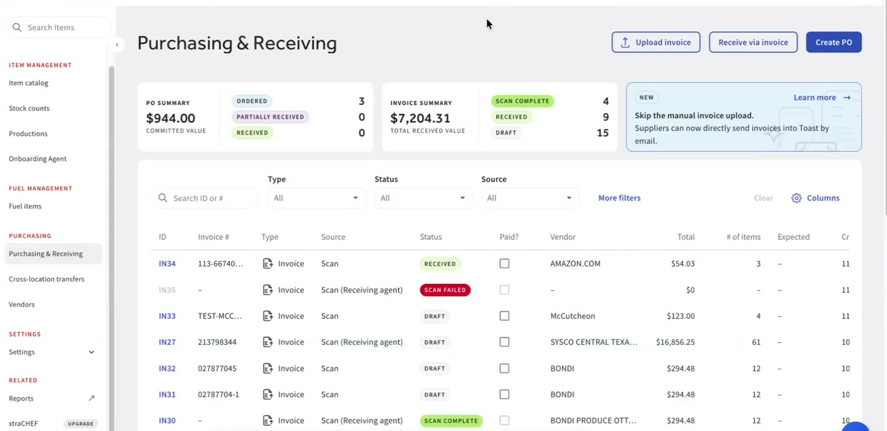
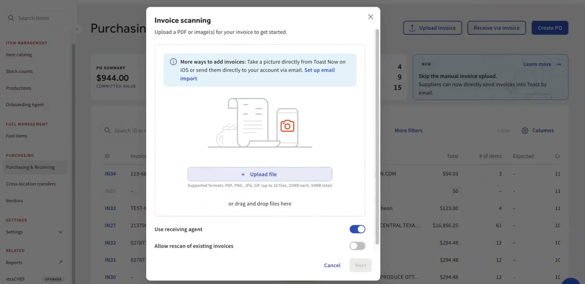
This step has one job: make sure the dollar amounts came in correctly. Don't get caught up in units yet.
Select an item to see where it was read from on the invoice. If Toast couldn't read something, or the numbers don't add up, you'll see a warning. If every number is in the right place, move on.
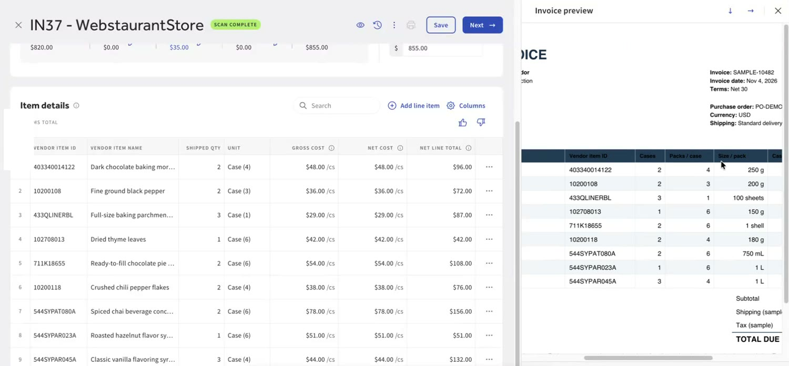
By default, each line is matched to the catalog item with the same vendor item ID.
When you create an item, the item type matters:
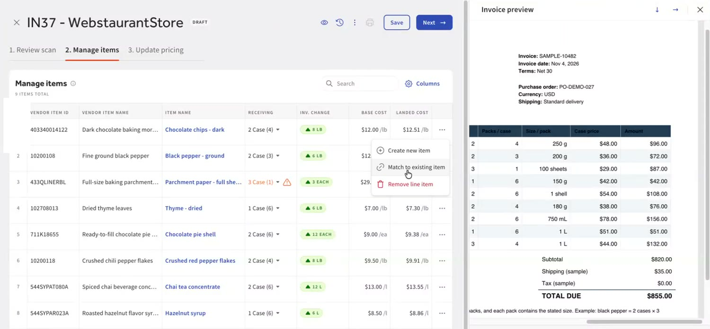
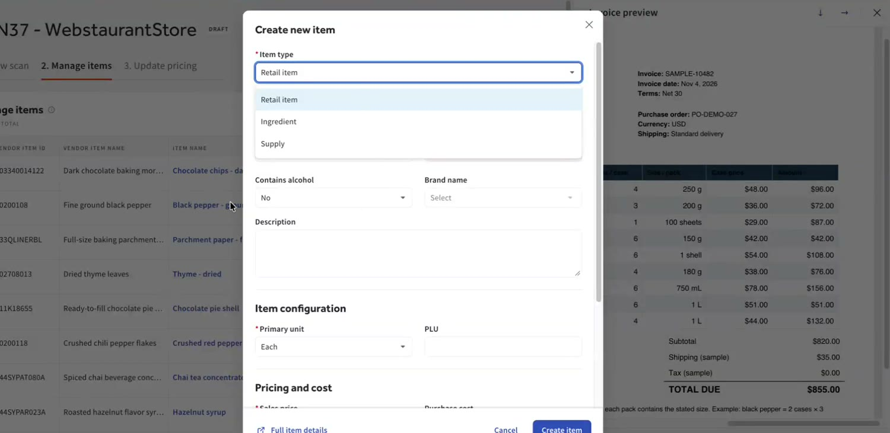
The first time you receive an item from a supplier, tell Toast how what you received relates to the item's primary unit. Ask yourself: how many primary units are in my receiving unit?
Toast reads the cases and packs on the invoice. Sometimes you'll need a little math to get back to the primary unit. You only need to do this once per item.
The invoice shows 2 cases, each with 4 packs of 250 g. Leave the quantity as it is. Set the receiving unit by multiplying the packs by the pack size to get what's in one case: 4 × 250 g = 1,000 g, which is about 2.2 lb.
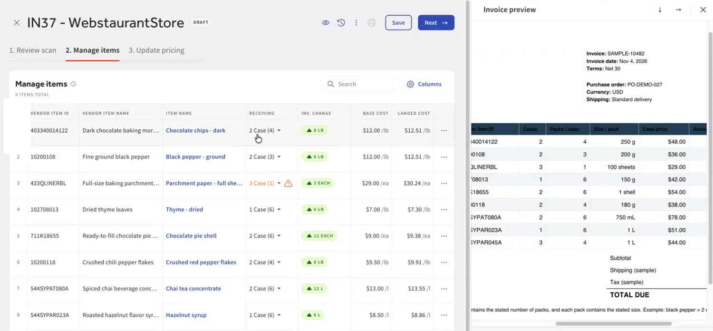
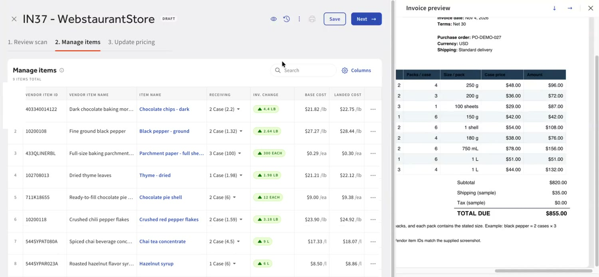
Move on to Update pricing. You can update an item's current price right in this flow. When everything looks right, choose Mark as received to add the stock.
For ingredients that roll up to menu items, a widget on the dashboard then shows every item whose margin changed because of the new ingredient cost. From there you can reprice or review what changed.
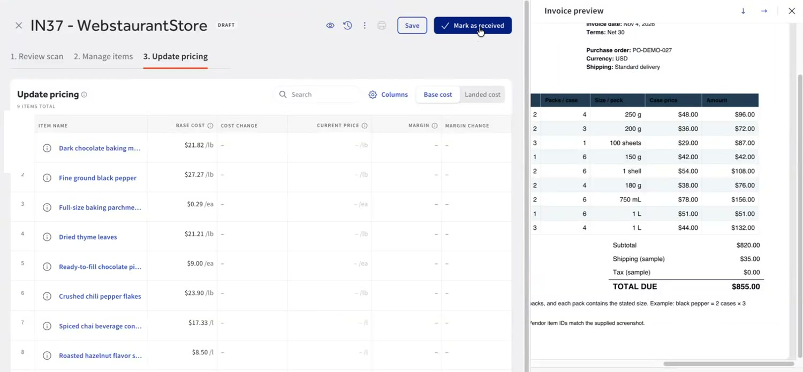
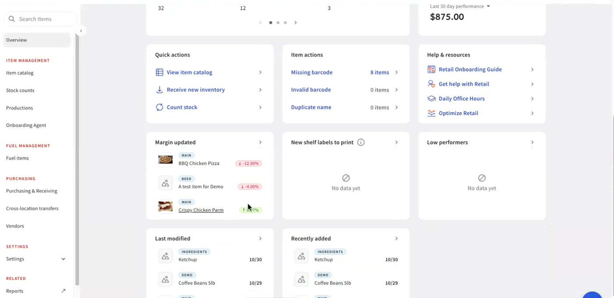
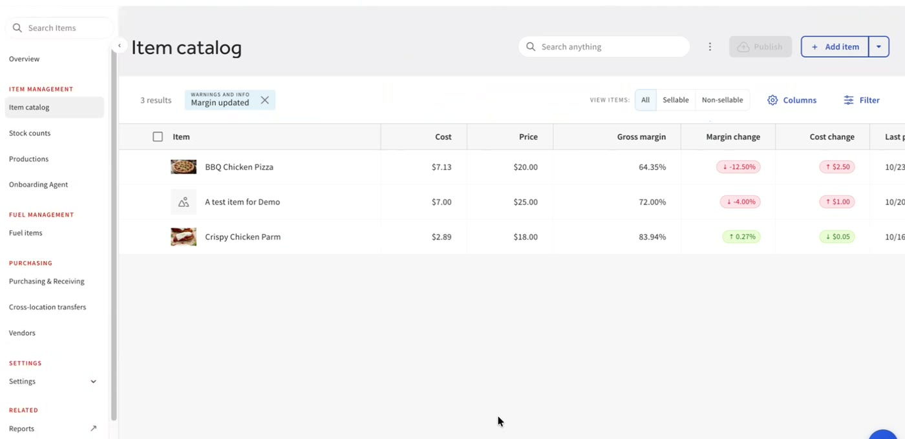
Upload the invoice, check the dollars, match every item, set the receiving unit, then mark as received and glance at the Margin updated widget.